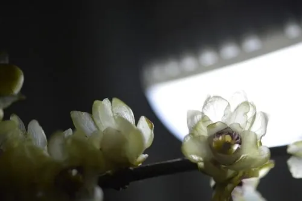

灌木与花木 · 植物界
腊梅 Chimonanthus praecox

中国特有的冬季香花灌木，隆冬时节先花后叶、开蜡黄色小花，香气浓郁，是传统庭院中的观赏花木。
- 分类
- 门被子植物门纲木兰纲目樟目科蜡梅科属蜡梅属
- 栖息环境
- 海拔 1000 米以下的山坡、林缘与庭院，喜光稍耐阴，耐寒耐旱
- 地理分布
- 中国湖北、陕西、河南等地，全国各地广泛栽培
- 保护级别
- 暂无评估；中国未列入国家重点保护野生植物名录
物种志
腊梅为落叶灌木，高可达 4 m，枝条丛生，小枝四棱形；叶片对生，椭圆状卵形至卵状披针形，全缘，表面粗糙。花期 11 月至翌年 3 月，先花后叶，花单生于去年生枝叶腋，花被片多数、蜡黄色，花径 2–4 cm，香气浓郁；果实为瘦果，生于坛状花托内，成熟时褐色。
腊梅原产中国湖北、陕西、河南等地，中国各地广泛栽培，喜光、稍耐阴，耐寒、耐旱，适宜深厚肥沃、排水良好的微酸性土壤。因花期正值隆冬、花香清冽，常被栽植于庭院、窗前与假山旁，与梅花并称“二梅”；花可提取芳香油，花蕾可入药，有解暑生津之效；根、茎也可入药。腊梅与梅花并非同科植物，腊梅属蜡梅科，梅花属蔷薇科，二者花期相近但花形与香气不同。
形态与习性
- 株高可达 4 m，枝条丛生
- 花期11 月至翌年 3 月，先花后叶
- 果期5–6 月，瘦果成熟
- 光照喜光，稍耐阴
- 水分耐旱，怕积水
- 土壤微酸性、深厚肥沃的壤土
- 主要用途庭院观赏、花提取芳香油、花蕾入药
趣味知识
- 腊梅在隆冬开花，花瓣蜡黄、香气浓郁，是冬季少有的香花灌木。
- 腊梅与梅花并称“二梅”，但腊梅属蜡梅科，梅花属蔷薇科，并非近亲。
- 腊梅先花后叶，花开时枝条上没有叶片，满树黄花格外醒目。
- 腊梅的花蕾可入药，有解暑生津的功效，花还可提取芳香油。